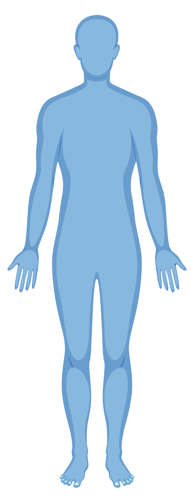

Neck
Torso
Upper Limbs
Lower Limbs
Muscles
Neck
Traps (trapezius)
Shoulders (deltoids)
Chest (pectoralis)
Biceps (biceps brachii)
Forearm (brachioradialis)
Abs (rectus abdominis)
Quads (quadriceps)
Calves (gastrocnemius)
Traps (trapezius)
Triceps (triceps brachii)
Lats (latissimus dorsi)
Middle Back (rhomboids)
Lower Back
Glutes (gluteus maximus and medius)
Quads (quadriceps)
Hamstrings (biceps femoris)
Calves (gastrocnemius)